JUNFU PU 
Researcher at Tencent, Ph.D Dept. Electronic Engineering and Information Science (EEIS) University of Science and Technology of China (USTC) Email: pjh (at) mail.ustc.edu.cn |
Biography
I am a researcher at Tencent ARC Lab, working on computer vision and multimedia applications. I got my PhD degree from University of Science and Technology of China (USTC), adviced by Prof. Wengang Zhou and Prof. Houqiang Li. Before that, I received the B.E. degree in EE from School of the Gifted Young, University of Science and Technology of China (USTC) in 2015. I was a research intern at Satoh Lab, National Institute of Informatics (NII) from Aug. 2016 to Nov. 2016. My research project at NII is video event retrieval with the supervision of Prof. Shin'ichi Satoh.
During my PhD period, my research interests include image processing and computer vision. Specifically, I focus on sign language recognition and translation. Besides, I pay attention to sign video generation task as well.
If you are interested in our research on sign language recognition, please visit the homepage of our Visual Sign Language Research Group to access our Chinese SLR dataset and research papers.
News [Top]
Open Resources [Top]
We have released some resources for research purpose about Sign Language Recognition (SLR). Please refer to the following links:
- Isolated SLR500 and Continuous SLR100 for Chinese Sign Language Recognition (CVPR 2019, AAAI 2018).
- CSL-Daily: Large-scale Continuous Sign Language Translation (SLT) benchmark (CVPR 2021).
- iMaterialist Challenge on Product Recognition (FGVC6, CVPR 2019) [Code].
- PyTorch re-implementation of paper "Dilated Convolutional Network with Iterative Optimization for Coutinuous Sign Language Recognition" (IJCAI'18) [Code].
Publications [Top]
|
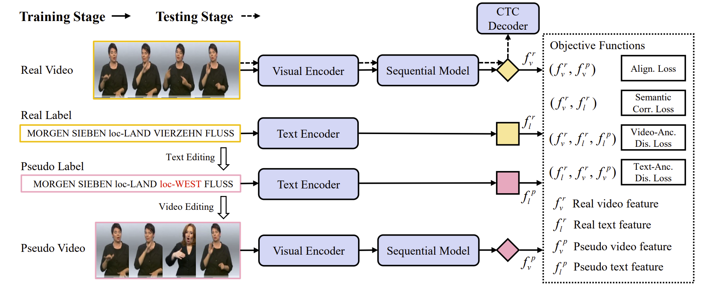
|
Prior-aware Cross Modality Augmentation Learning for Continuous Sign Language Recognition
Hezhen Hu, Junfu Pu, Wengang Zhou, and Houqiang Li IEEE Transactions on Multimedia, 2023 [Paper] [BibTex] |
|
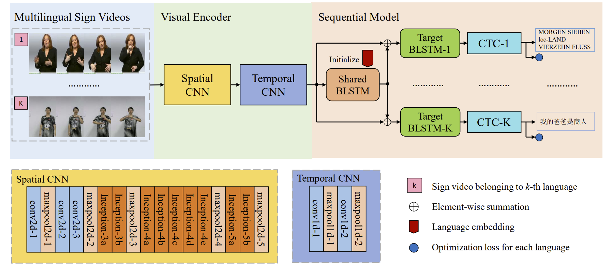
|
Collaborative Multilingual Continuous Sign Language Recognition: A Unified Framework
Hezhen Hu*, Junfu Pu*, Wengang Zhou, and Houqiang Li (*equal contribution) IEEE Transactions on Multimedia, 2022 [Paper] [BibTex] |
|
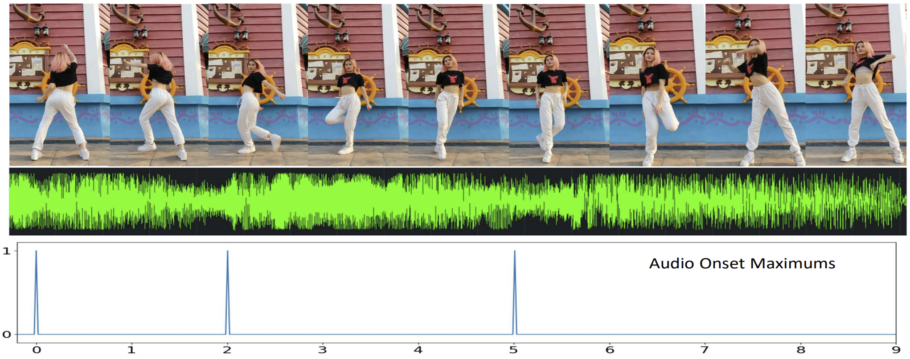
|
Self-Supervised Learning of Music-Dance Representation through Explicit-Implicit Rhythm Synchronization
Jiashuo Yu, Junfu Pu#, Ying Cheng, Rui Feng, and Ying Shan (#corresponding author) Technical report: arXiv preprint arXiv:2207.03190, 2022 [Paper (arXiv)] [BibTex] |
|
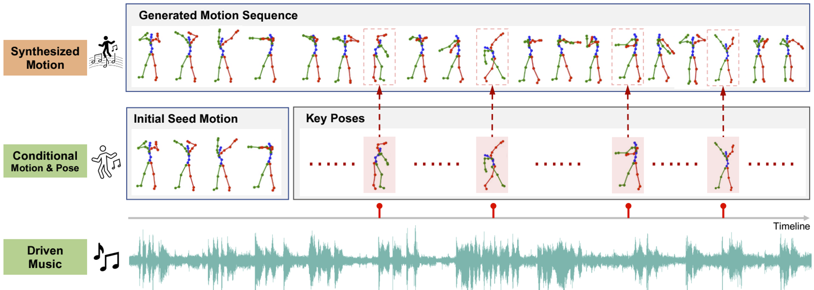
|
Music-driven Dance Regeneration with Controllable Key Pose Constraints
Junfu Pu, and Ying Shan Technical report: arXiv preprint arXiv:2207.03682, 2022 [Paper (arXiv)] [BibTex] |
|
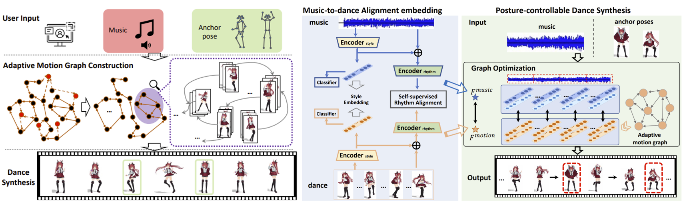
|
PC-Dance: Posture-controllable Music-driven Dance Synthesis
Jibin Gao, Junfu Pu, Honglun Zhang, Ying Shan, and Wei-Shi Zheng ACM International Conference on Multimedia (ACM MM), 2022 [Paper] [BibTex] |
|
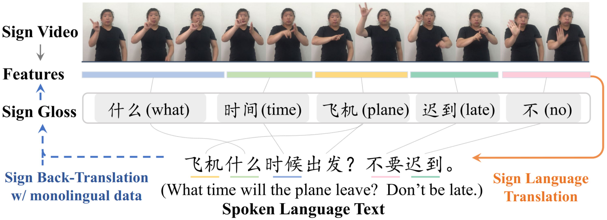
|
Improving Sign Language Translation with Monolingual Data by Sign Back-Translation
Hao Zhou, Wengang Zhou, Weizhen Qi, Junfu Pu, and Houqiang Li IEEE Conference on Computer Vision and Pattern Recognition (CVPR), 2021 [Paper (arXiv)] [BibTex] |
|
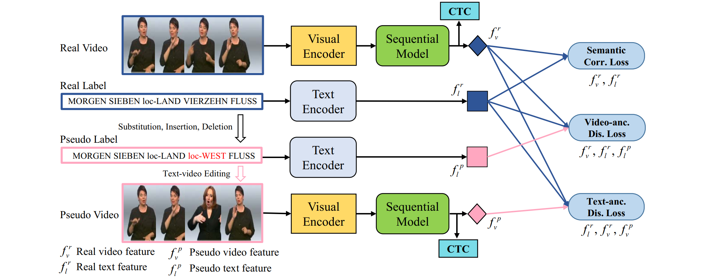
|
Boosting Continuous Sign Language Recognition via Cross Modality Augmentation
Junfu Pu, Wengang Zhou, Hezhen Hu, and Houqiang Li ACM International Conference on Multimedia (ACM MM), 2020 [Paper] [BibTex] [arXiv] [Presentation] |
|
|
Global-local Enhancement Network for NMFs-aware Sign Language Recognition
Hezhen Hu, Wengang Zhou, Junfu Pu, and Houqiang Li ACM Transactions on Multimedia Computing Communications and Applications (TOMM), 2020 [Paper] [BibTex] [arXiv] |
|
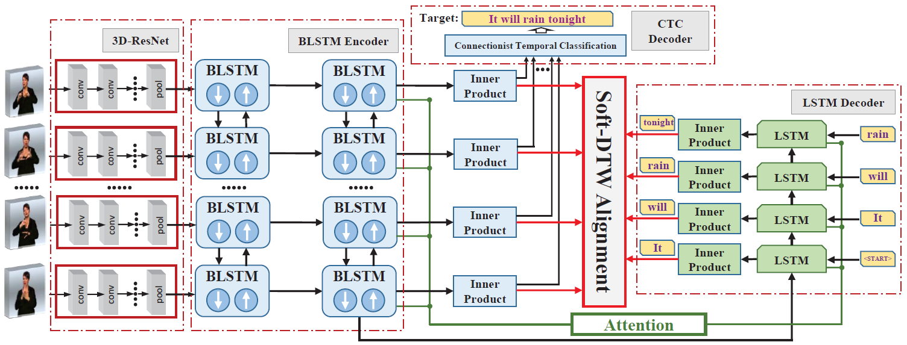
|
Iterative Alignment Network for Continuous Sign Language Recognition
Junfu Pu, Wengang Zhou, and Houqiang Li IEEE Conference on Computer Vision and Pattern Recognition (CVPR), 2019 [Paper] [BibTex] [Poster] [Project] |
|
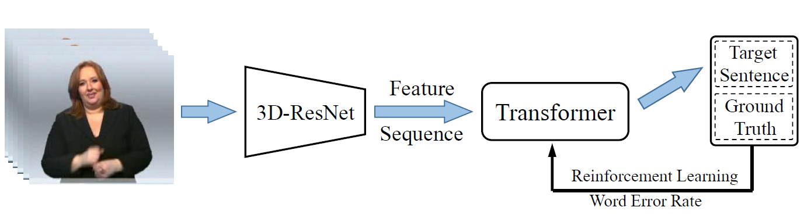
|
Continuous Sign Language Recognition via Reinforcement Learning Zhihao Zhang, Junfu Pu, Liansheng Zhuang, Wengang Zhou, and Houqiang Li International Conference on Image Processing (ICIP, Best Student Paper Finalists), 2019 [Paper] [BibTex] [Best Student Paper Finalists] |
|
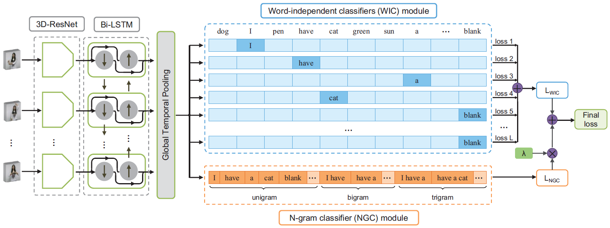
|
Deep Grammatical Multi-classifier for Continuous Sign Language Recognition Chengcheng Wei, Wengang Zhou, Junfu Pu, and Houqiang Li International Conference on Multimedia Big Data (BigMM), 2019 [Paper] [BibTex] |
|
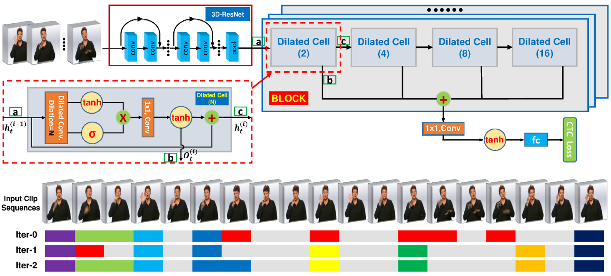
|
Dilated Convolutional Network with Iterative Optimization for Coutinuous Sign Language Recognition Junfu Pu, Wengang Zhou, and Houqiang Li International Joint Conference on Artificial Intelligence (IJCAI), 2018 [Paper] [BibTex] [Slides] [Code] |
|
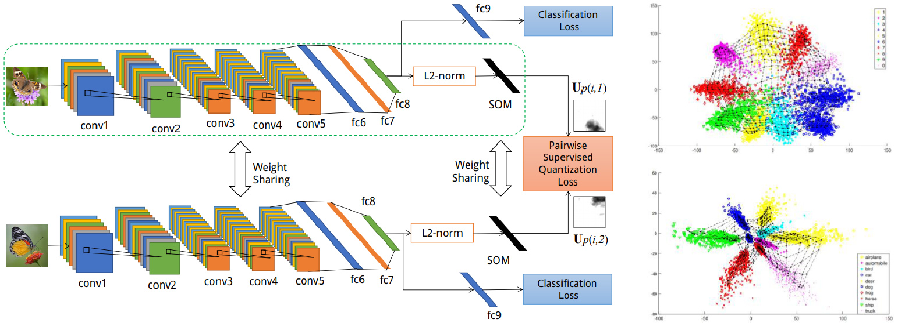
|
Deep Supervised Quantization by Self-Organizing Map Min Wang, Wengang Zhou, Qi Tian, Junfu Pu, and Houqiang Li ACM International Conference on Multimedia (ACM MM), 2017 [Paper] [BibTex] |
|
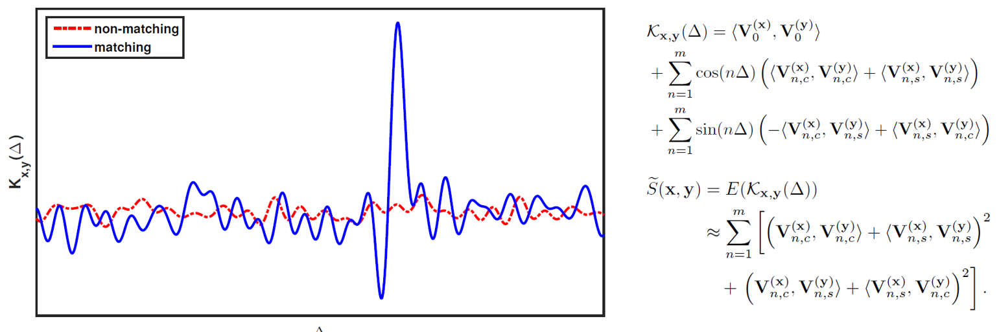
|
Energy Based Fast Event Retrieval in Video with Temporal Match Kernel Junfu Pu, Yusuke Matsui, Fan Yang, and Shin'ichi Satoh International Conference on Image Processing (ICIP), 2017 [Paper] [BibTex] [Slides] |
|
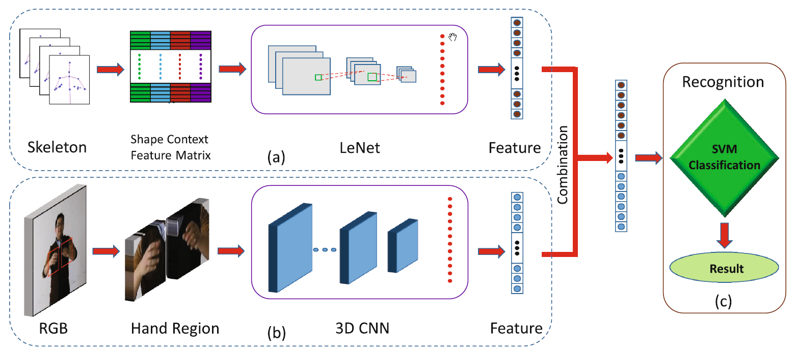
|
Sign Language Recognition with Multi-modal Features Junfu Pu, Wengang Zhou, and Houqiang Li Pacific-Rim Conference on Multimedia (PCM), 2016 [Paper] [BibTex] |
|
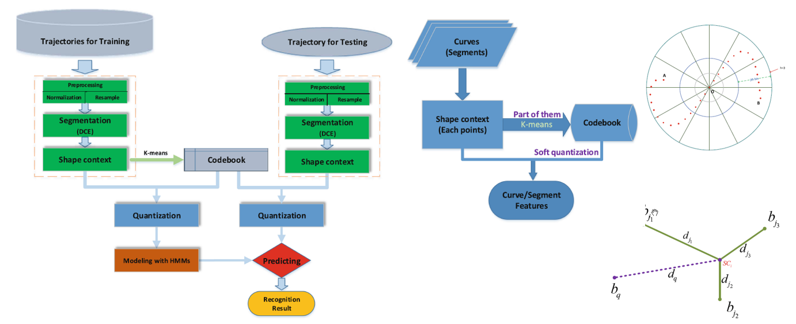
|
Sign Language Recognition Based on Trajectory Modeling with HMMs Junfu Pu, Wengang Zhou, Jihai Zhang, and Houqiang Li International Conference on Multimedia Modelling (MMM), 2016 [Paper] [BibTex] [Poster] |
|
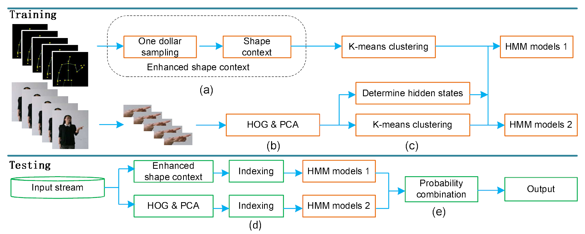
|
Chinese Sign Language Recognition with Adaptive HMM Jihai Zhang, Wengang Zhou, Chao Xie, Junfu Pu, and Houqiang Li International Conference on Multimedia and Expo (ICME), 2016 [Paper] [BibTex] |
Patents
- 于家硕, 蒲俊福, 单瀛. 一种模型训练方法、装置、设备和存储介质. 202210148011.9. 2022.02.17申请.
- 李厚强, 周文罡, 胡鹤臻, 蒲俊福. 基于全局-局部特征增强的孤立词手语识别方法及系统. 202010513333.X. 2020.06.08申请. 2022.07.15授权.
- 李厚强, 周文罡, 胡鹤臻, 蒲俊福. 一种基于跨模态数据增广的连续手语识别方法. 202011060274.1. 2020.09.30申请. 2022.07.15授权.
- 李厚强, 周文罡, 蒲俊福, 胡鹤臻. 基于多语言协同的连续手语识别系统. 202011060272.2. 2020.09.30申请. 2022.07.15授权.
- 李厚强, 周文罡, 蒲俊福. 手语识别方法及装置. 201910456373.2. 2019.05.29申请. 2021.07.06授权.
- 李厚强, 蒲俊福, 周文罡. 一种手语识别方法及装置. 201810743921.5. 2018.07.09申请.
Projects [Top]
|
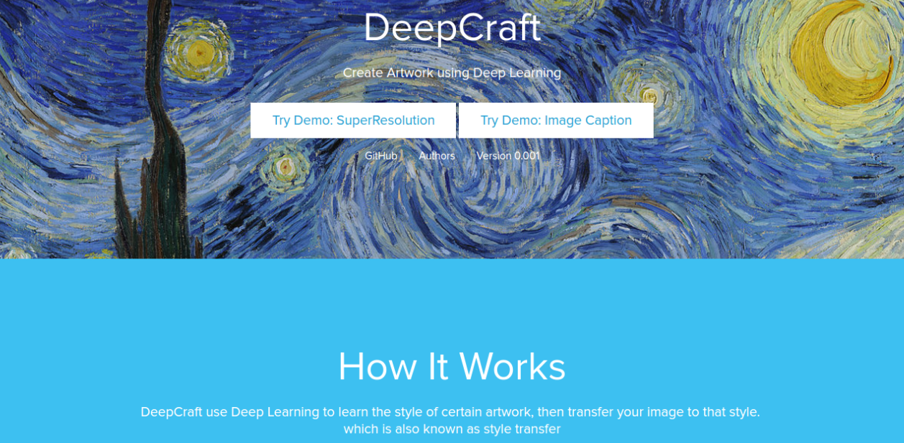
|
DeepCraft: Fall in Love with the World
Yunfeng Wang, Ke Sun, Yue Lv, and Junfu Pu Project for hackathon (HACKxSJTU), 2017. Finished at SJTU, Shanghai, China [Project] [Code] [Prize] [Certification] |
|
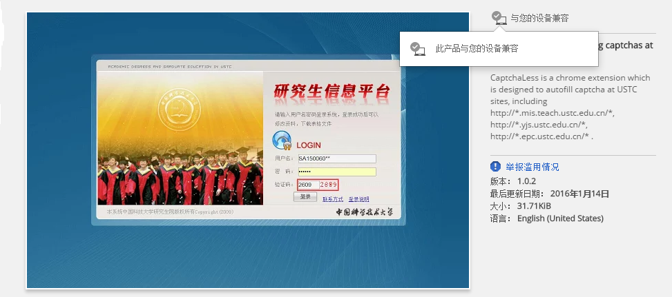
|
CaptchaLess: A Chrome Extension for Auto-filling Captchas Yunfeng Wang, Zhihua Huang, and Junfu Pu Final Project for Video Technology Course, Autumn, 2015 Finished at University of Science and Technology of China (USTC), China [Project] [Code] [Chrome Extension] [Slides] |
Experience [Top]
- 2020.09 - present, Senior researcher at Applied Research Center (ARC Lab), Tencent PCG.
- 2015.06 - 2020.07, Dept. EEIS, University of Science and Technology of China.
- 2016.08 - 2016.11, Research Intern at National Institute of Informatics (NII). Advisor: Prof. Satoh.
- 2011.09 - 2015.06, B.E, School for the Gifted Young (SCGY), University of Science and Technology of China.
Teaching Assistant [Top]
- Spring 2018, Digital Image Analysis, USTC. [Course Homepage]
- Autumn 2017, Digital Image Analysis, USTC.
Link [Top]
- Visual Sign Language Research Group (VSLRG): SLR dataset and papers of our research group.
- GPU Resources: Check GPU resources.
- GPU Cluster Document: A quick guide for MCC GPU cluster.
- Github Commands: Useful commands for github.
- CVPR 2018 Papers: CVPR 2018 papers in category.
- USTC MCC Paper Reading: Documents for paper reading and presentation.